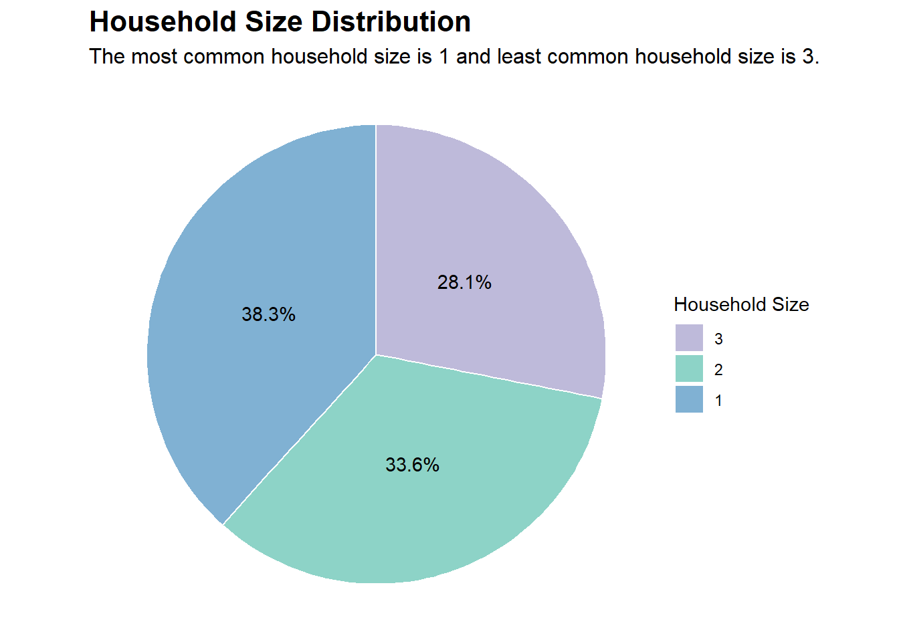

fin_data <- read_csv("data/FinancialJournal.csv",
col_types = cols("i", "T", "c", "d"))
fin_data$category <-
fin_data$category %>% factor(levels =
c("Education",
"Food",
"Recreation",
"RentAdjustment",
"Shelter",
"Wage"))
res_data <- read_csv("data/Participants.csv",
col_types = cols("i", "i", "l", "i", "c", "c", "d"))
res_data$educationLevel <-
res_data$educationLevel %>% ordered(levels =
c("Low",
"HighSchoolOrCollege",
"Bachelors",
"Graduate")) # order of factors may be meaningful, so use ordered()
merged_data <- merge(fin_data, res_data, by = "participantId")Take-home Exercise 01
Load datasets
This step also ensures that the variables are of the correct types (e.g. character, numeric, integer).
Getting to know our data
The City of Engagement has a population of 50,000. We have respondents’ data with a sample size of 1,000, which should give us a decent representation of how the population looks like.
Firstly, let’s perform some basic visualisations so that we can get to know our data better.
Code
# Creating a data.frame containing the frequencies of householdSize in our dataset of 1,000 participants
hs_counts <- data.frame(table(res_data$householdSize))
colnames(hs_counts) <- c("householdSize", "Freq")
# Adding a percentage variable based on the frequencies
hs_counts$pct <- percent(hs_counts$Freq / sum(hs_counts$Freq))
# Choosing some nice colors for the plot
nice_colors <- c("#80b1d3", "#8dd3c7", "#bebada")
# Plotting (using coord_polar creates a pie chart from a stacked bar chart)
ggplot(hs_counts, aes(x = "", y = Freq, fill = factor(householdSize))) +
geom_bar(stat = "identity", width = 1, color = "white") +
geom_text(aes(label = pct), position = position_stack(vjust = 0.5)) +
coord_polar("y", start = 0) +
labs(title = "Household Size Distribution",
subtitle = "The most common household size is 2, but the distribution is rather equal",
fill = "Household Size") +
theme_void() +
scale_fill_manual(values = nice_colors, guide = guide_legend(reverse = TRUE)) +
theme(plot.title = element_text(face = "bold", size = 16),
plot.subtitle = element_text(size = 12))
Code
# Creating a data.frame containing the frequencies of haveKids in our dataset of 1,000 participants
kids_counts <- data.frame(table(res_data$haveKids))
colnames(kids_counts) <- c("haveKids", "Freq")
# Adding a percentage variable based on the frequencies
kids_counts$pct <- percent(kids_counts$Freq / sum(kids_counts$Freq))
# Choosing some nice colors for the plot
nice_colors <- c("#80b1d3", "#8dd3c7")
# Plotting (using coord_polar creates a pie chart from a stacked bar chart)
ggplot(kids_counts, aes(x = "", y = Freq, fill = factor(haveKids))) +
geom_bar(stat = "identity", width = 1, color = "white") +
geom_text(aes(label = pct), position = position_stack(vjust = 0.5)) +
coord_polar("y", start = 0) +
labs(title = "Distribution of Whether Respondents Have Kids",
subtitle = "Most respondents do not have kids. Only slightly less than a third have kids.",
fill = "Do respondents have kids?") +
theme_void() +
scale_fill_manual(values = nice_colors, guide = guide_legend(reverse = TRUE)) +
theme(plot.title = element_text(face = "bold", size = 16),
plot.subtitle = element_text(size = 12))
Code
# Calculate the mean, min, and max age
mean_age <- mean(res_data$age)
min_age <- min(res_data$age)
max_age <- max(res_data$age)
# Choosing some nice colors for the plot
nice_colors <- c("#80b1d3", "#8dd3c7", "#bebada", "#fccde5")
# Plotting
ggplot(res_data, aes(x = age)) +
geom_histogram(breaks = c(18, 29, 39, 49, 60), fill = nice_colors, color = "white") +
labs(title = "Age Distribution",
subtitle = paste("The age groups are relatively evenly distributed, with ", "Min. Age = ", min_age, " and Max. Age = ", max_age, sep = ""),
x = "Age",
y = "Counts",
caption = "Note:\nFor geom_histogram(), all bins are left-inclusive and right-exclusive by default, except the rightmost bin,\nwhich is both left and right-inclusive.") +
theme_bw() +
theme(plot.title = element_text(face = "bold", size = 16),
plot.subtitle = element_text(size = 12),
plot.caption = element_text(size = 10, hjust = 0)) +
geom_vline(xintercept = mean_age, color = "#333333", linetype = "dashed") +
annotate("text", x = mean_age + 4.2, y = 40, label = paste("Mean age:", round(mean_age, 1)), color = "#333333") +
geom_text(aes(x = 23.5, y = 150, label = "18-29\nyears old"), size = 3.5) +
geom_text(aes(x = 34.5, y = 150, label = "30-39\nyears old"), size = 3.5) +
geom_text(aes(x = 44.5, y = 150, label = "40-49\nyears old"), size = 3.5) +
geom_text(aes(x = 54.5, y = 150, label = "50-60\nyears old"), size = 3.5) +
scale_y_continuous(breaks = breaks_width(50)) # this useful function is from the 'scales' package
Code
# Creating a data.frame containing the frequencies of educationLevel in our dataset of 1,000 participants
edu_counts <- data.frame(table(res_data$educationLevel))
colnames(edu_counts) <- c("educationLevel", "Counts")
# Adding a percentage variable based on the frequencies
edu_counts$pct <- percent(edu_counts$Counts / sum(edu_counts$Counts))
# Choosing some nice colors for the plot
nice_colors <- c("#80b1d3", "#8dd3c7", "#bebada", "#fccde5")
# Plot
ggplot(edu_counts, aes(x = educationLevel, y = Counts)) +
geom_bar(stat = "identity", fill = nice_colors, color = "#333333") +
labs(title = "Education Level Distribution", x = "Education Level", y = "Counts",
subtitle = "More than half of respondents have highest education level of 'High School/College'") +
theme_bw() +
theme(plot.title = element_text(face = "bold", size = 16),
plot.subtitle = element_text(size = 12)) +
geom_text(aes(label = pct), vjust = 1.5)
Code
# Creating a data.frame containing the frequencies of interestGroup in our dataset of 1,000 participants
interest_counts <- data.frame(table(res_data$interestGroup))
colnames(interest_counts) <- c("interestGroup", "Counts")
# Adding a percentage variable based on the frequencies
interest_counts$pct <- percent(interest_counts$Counts / sum(interest_counts$Counts), accuracy = 0.1)
# Plot
ggplot(interest_counts, aes(x = reorder(interestGroup, -Counts), y = Counts)) +
geom_bar(stat = "identity", fill = "#80b1d3", color = "#333333") +
labs(title = "Interest Group Distribution", x = "Interest Group", y = "Counts",
subtitle = "Most common interest among respondents is 'J', and least common interest is 'E'") +
theme_bw() +
theme(plot.title = element_text(face = "bold", size = 16),
plot.subtitle = element_text(size = 12)) +
geom_text(aes(label = pct), vjust = 1.5)